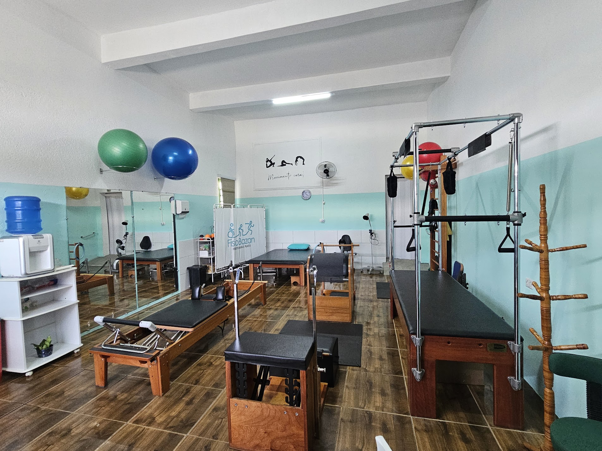
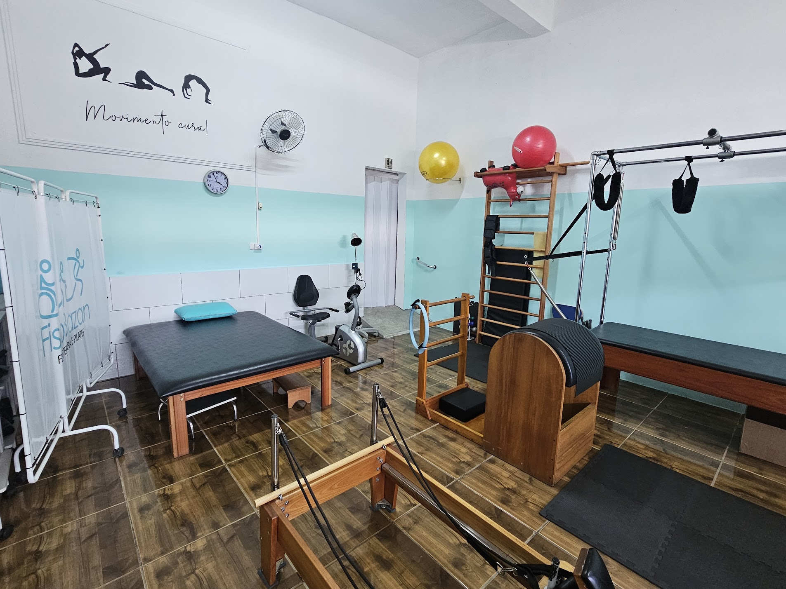

Movimento
cura.
No Cadillac em madeira, respiração, controle e fluidez trabalham juntos para devolver leveza, postura e autonomia ao seu corpo.
No Cadillac em madeira, respiração, controle e fluidez trabalham juntos para devolver leveza, postura e autonomia ao seu corpo.
Do alívio de dores na coluna à recuperação funcional, cada aparelho oferece suporte preciso e seguro em cada amplitude de movimento.
Atendimento com horário agendado pela Dra. Tairyni Silva Bazan Cruz. Venha sentir a fluidez do Pilates em aparelhos e da Fisioterapia na FisioBazan.
Na FisioBazan, acreditamos que o movimento cura. Sob a condução da Dra. Tairyni Silva Bazan Cruz, cada atendimento com horário agendado nasce de uma escuta atenta e de uma avaliação funcional precisa — unindo a ciência da fisioterapia à fluidez do Pilates em aparelhos.
Aulas completas em Reformer, Cadillac, Wunda Chair (Step Chair), Ladder Barrel e Espaldar para fortalecer o core, melhorar a postura e ampliar a flexibilidade sem impacto.
Consultar horáriosTratamento focado em alívio de dores lombares, cervicais, hérnia de disco, lesões ligamentares, ortopedia e pós-operatório com acompanhamento clínico dedicado.
Agendar avaliaçãoRetomada gradual de força, equilíbrio e mobilidade com exercícios terapêuticos, bicicleta ergométrica e acessórios para devolver segurança aos movimentos do dia a dia.
Falar com a clínicaPlanos voltados para adultos, idosos (com horário dedicado de seg a sex, 09h–12h) e pessoas que buscam prevenir dores, corrigir desequilíbrios e viver com disposição.
Ver disponibilidade

Localizada no Jardim Santa Rita de Cássia, em Suzano/SP, a FisioBazan reúne em um só ambiente a estrutura completa do Pilates em madeira, os recursos clínicos da fisioterapia e acessibilidade total.
★★★★★“Profissional incrível, super atenciosa e dedicada. Explica cada detalhe do tratamento, transmite segurança e os resultados aparecem rápido. Ambiente acolhedor e atendimento humanizado. Recomendo de olhos fechados!”
★★★★★“Super indico!!! Profissionalismo... Carinho e compreensão caminhando juntos. Tay, como carinhosamente a chamamos, é excelente fisioterapeuta e também excelente instrutora de Pilates!!”
★★★★★“Ótima profissional, atenciosa, rompi os ligamentos do tornozelo, tive ótimos resultados com a fisioterapia, super recomendo.”
Sim! O Pilates na FisioBazan é adaptado ao seu nível atual após uma avaliação individual. A flexibilidade, a força e o controle corporal evoluem de forma gradual e segura.
Sim, esse é um dos nossos maiores diferenciais. Como oferecemos Fisioterapia e Pilates no mesmo espaço, conduzimos sua recuperação clínica e a transição segura para o fortalecimento preventivo.
Sim. Todo o acompanhamento é conduzido por fisioterapeuta, adaptando cargas, amplitudes e exercícios de acordo com o seu histórico clínico e exames.
Atendemos com horário agendado: Segunda das 09h às 12h, Terça a Quinta das 07h30 às 17h e Sexta das 07h30 às 12h (fechado aos sábados e domingos). Também contamos com horário dedicado para idosos de segunda a sexta, das 09h às 12h.
Estamos na R. José Fernandes Santos, 50 — Jardim Santa Rita de Cássia, Suzano/SP (CEP 08630-370). O espaço conta com entrada, estacionamento, banheiro e assentos acessíveis para pessoas em cadeira de rodas.
Atendimento com horário agendado pela Dra. Tairyni Silva Bazan Cruz. Fale agora pelo WhatsApp e agende sua aula experimental de Pilates ou avaliação de Fisioterapia.
Agendar aula experimentalWhatsApp: (11) 97524-1935 Telefone: (11) 98019-1866